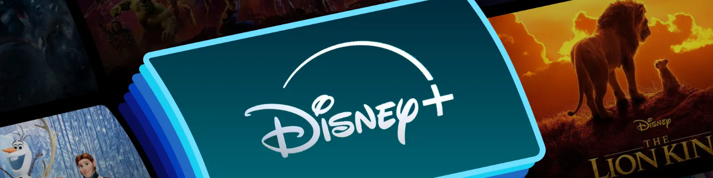
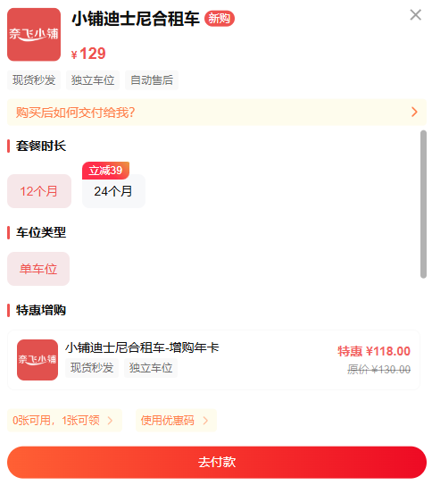
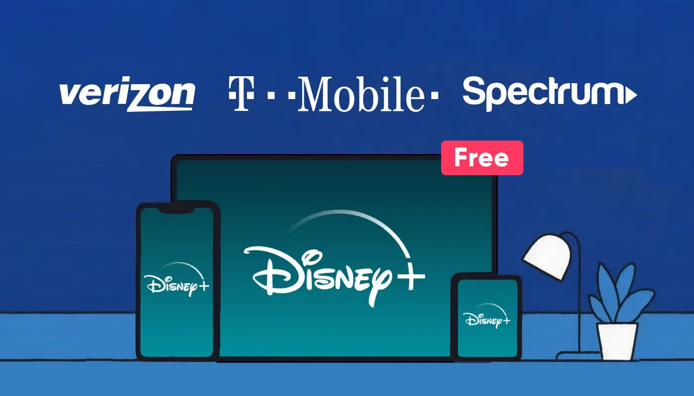

如何在 2025 年免費獲得 Disney Plus
你是否也在看《九宮格》和《手術刀獵人》，卻因為Disney+不斷上漲的訂閱費而猶豫不決？每次查看支付信息，你都會忍不住想："有沒有辦法免費看？""有沒有辦法只花幾塊錢就能看完整部劇？"
作為一名長期用戶，我也曾因高昂的月費而感到糾結，嘗試過各種方法來降低訂閱費用。在本文中，我將分享一些我親身實踐並發現有效的方法，希望它們能幫助你以最少的花費享受 Disney+。
Disney+ 有免費試用嗎？
自 2025 年起，Disney+ 的免費試用幾乎已完全消失。Disney+ 過去提供 7 天或 30 天的試用期，但這些選項現已取消。
因此，如果你想免費使用 Disney+，以下部分將介紹一些替代方法。無論是通過帳戶共享、運營商套餐還是促銷優惠，你仍然可以體驗 Disney+ 上的精彩內容，而無需花費太多。
通過年度訂閱免費獲得 Disney+
如果你想免費使用 Disney+，選擇年度訂閱是一個不錯的選擇。通過年度訂閱 Disney+ Premium(無廣告) ，你只需支付 10 個月的費用，即可獲得 12 個月的完整服務——相當於免費獲得 2 個月的 Disney+ 服務。
然而，這種方法也有一些明顯的局限性。首先，它需要一次性支付相對較大的金額，這對於預算緊張的用戶來說可能是一個負擔。其次，一旦你選擇年度套餐，你將被鎖定在 12 個月的訂閱期內，無法暫停或更改。如果你只打算觀看特定劇集，年度訂閱可能不是最佳選擇。
通過共享平台免費獲得 Disney+
考慮到年度訂閱的高昂前期成本和缺乏靈活性，我開始探索更實惠、更靈活的替代方案。在我嘗試的所有方法中，通過像 奈飛小鋪 這樣的共享平台購買Disney Plus賬戶是最實用、最划算的解決方案。
通過與其他用戶分攤訂閱費用，你只需支付原價的 30% 到 40% 即可享受 Disney+ Premium 的全部服務。此外，奈飛小鋪 上的每個 Disney+ 共享帳戶都擁有獨立的用戶資料。你的觀看歷史記錄、收藏夾和內容推薦完全私密，無需擔心帳戶共享通常帶來的干擾或隱私問題。
共享的 Disney+ 帳戶會被禁止嗎？
話雖如此，許多人帳戶共享方面擔心一件事：從2024年11月開始，Disney+開始實施密碼共享政策，嚴格禁止非家庭成員使用帳戶。那麼，購買共享的Disney+帳戶有風險嗎？它會突然停止使用，甚至產生額外費用嗎？
有了奈飛小鋪，你無需擔心這些。平台上的所有Disney+帳戶均來自合法來源，並由自動化系統管理和分配，確保在整個訂閱期內穩定訪問。
即使出現問題，奈飛小鋪 也提供 24/7 全天候客戶支持，隨時準備提供幫助並快速解決任何問題。就我個人體驗而言，該平台的 可靠性 和 穩定性 令人印象深刻。
雖然這種方法並非完全免費，但無疑是目前訪問 Disney+ 帳戶最經濟實惠、最安全的方式。對於注重性價比和流暢體驗的用戶來說，絕對值得一試。
你的運營商提供免費的 Disney+
如果你已經訂閱了某些移動或互聯網服務，那麼將 Disney+ 作為捆綁優惠可能是一個非常划算的選擇。在美國，目前有三家主要提供商提供此類優惠：
威瑞森
如果你是 Verizon 用戶，你或許有資格免費享受 6 個月的 Disney+ Premium(無廣告)服務。這項福利包含在 5G Get More 或 5G Play More 無限流量套餐中。除了超高速 5G 流量外，這些套餐還提供在免費期間暢享無廣告的 Disney+ 內容。
- 5G 獲得更多：每月 90 美元——包括 6 個月的 Disney+ Premium(無廣告)、Apple Music 等。
- 5G Play More：每月 80 美元——還包括 6 個月的 Disney+ Premium(無廣告)、無限數據和額外的娛樂服務。
T-Mobile
T-Mobile 的 Go5G Next 無限流量套餐為用戶提供一年 Disney+ Premium(無廣告)和 Hulu(有廣告)的免費使用權。每月只需 90 美元，即可暢享兩個平台的全面服務。這包括所有無廣告的 Disney+ 內容以及 Hulu 上的熱門節目和電影。
Spectrum
Spectrum 為 TV Select 或更高級別有線電視套餐的客戶提供 Disney+ 服務。你可以通過 Spectrum 帳戶中的"套餐詳情"部分激活 Disney+ 訂閱。
- 電視精選：每月 49.99 美元——包括 Disney+ Basic(帶廣告)和 125 多個頻道，如 HBO 和 ESPN。
- 電視基本套餐：每月 59.99 美元——還包括 Disney+ Basic(帶廣告)和各種基本有線電視頻道。
還有其他方法可以免費獲得 Disney+ 嗎？
除了移動或互聯網套餐外，還有其他幾種方式可以免費(或至少以低得多的價格)享受 Disney+。例如，某些信用卡和獎勵平台(例如美國運通卡和 Tesco Clubcard)允許你使用積分兌換 Disney+ 訂閱。在某些情況下，你甚至可以通過使用累積的獎勵完全免費獲得短期會員資格。
此外，大型零售商和電商平台經常推出捆綁優惠。例如，Target Circle 和 Walmart+ 會員偶爾會收到免費的 Disney+ 訂閱，作為限時促銷活動的一部分——通常持續幾個月。這些優惠讓你在省錢的同時享受額外的流媒體福利，讓整體購物體驗更加豐富。
結論：如何在 2025 年免費獲得 Disney+？
到 2025 年，確實有很多方法可以免費或以較低的成本訪問 Disney+——無論是通過年度賬單折扣、提供商捆綁還是促銷優惠。
但根據我的個人經驗，我最推薦的方式是通過 奈飛小鋪 購買Disney+賬戶。它的價格比官方網站低得多，觀看體驗幾乎沒有差別。它安全、穩定，而且物超所值。
如果你還想以較少的花費享受 Disney+，那麼這裡是一個不錯的起點。
常問問題
Disney Plus 通過 Amazon Prime 可以免費使用嗎？
不，Disney+ 並非通過 Amazon Prime 免費提供。雖然 Amazon Prime 提供各種福利，但 Disney+ 並不包含在標準 Prime 會員中。不過，Amazon Prime 可能會不定期推出促銷活動或捆綁套餐，為 Prime 會員提供 Disney+ 折扣。
如何免費獲得 6 個月的 Disney+？
Verizon 的 5G Get More 或 5G Play More 無限流量套餐提供 6 個月的 Disney+ Premium(無廣告)免費使用權。只需訂閱其中一個套餐，並通過你的 Verizon 賬戶激活即可。
如何激活 3 個月的免費 Disney Plus？
Disney+ 不提供標準的 3 個月免費試用，但你仍然可以通過某些優惠獲得。例如，Tesco Clubcard 可能會贈送你 3 個月的 Disney+ 免費試用作為獎勵。O2 的按月付費計劃有時也會包含長達 3 個月的免費試用。